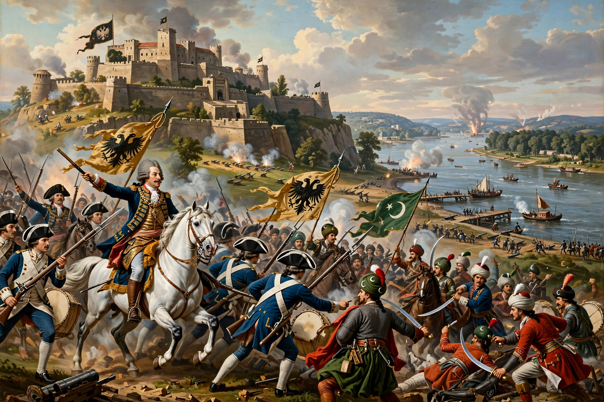

The Battle of Petrovaradin, also known as the Battle of Peterwardein, was fought on 5 August 1716 between the Habsburg Austrian army under Prince Eugene of Savoy and the Ottoman Empire during the Austro-Turkish War of 1716–1718. It was a decisive Austrian victory and led to the capture of Timișoara and, the following year, Belgrade.

| Battle of Petrovaradin | |
|---|---|
| Date | 5 August 1716 |
| Location | Petrovaradin, present-day Serbia |
| Result | Habsburg victory |
| Commanders | Prince Eugene of Savoy; Grand Vizier Silahdar Damat Ali Pasha † |
After the Ottoman Empire defeated Russia in the Pruth River Campaign (1711) and reconquered the Morea from Venice (1715), Austria intervened on Venice's side under the terms of the Treaty of Karlowitz guarantee. The Grand Vizier, Silahdar Damat Ali Pasha, marched north with an army often estimated at around 150,000 men and besieged the fortress of Petrovaradin on the Danube, opposite modern Novi Sad.
Prince Eugene, with roughly 80,000–90,000 Austrian troops entrenched near the fortress, decided to attack on 5 August 1716 despite being outnumbered. After a river crossing in the night and an artillery bombardment targeting Ottoman positions (one account holds that Eugene first targeted a battery that threatened his bridge), Austrian infantry and cavalry broke the Ottoman centre and right; the Janissaries' counterattack briefly threatened the Austrian middle before cavalry under Count Pálffy decided the day. Ali Pasha was killed and the Ottoman army fled, leaving its camp, artillery, and the Grand Vizier's tent to the Austrians. Ottoman losses are often estimated at around 30,000; Austrian losses were far lower, around 5,000.
Eugene went on to capture Timișoara (1716) and Belgrade (1717). The resulting Treaty of Passarowitz (1718) gave Austria the Banat, northern Serbia including Belgrade, and Little Wallachia — the greatest extent of Habsburg expansion in the Balkans. See also the Byzantine art traditions of the wider region.
Article recreated from memory for the muse-webcrawl project.